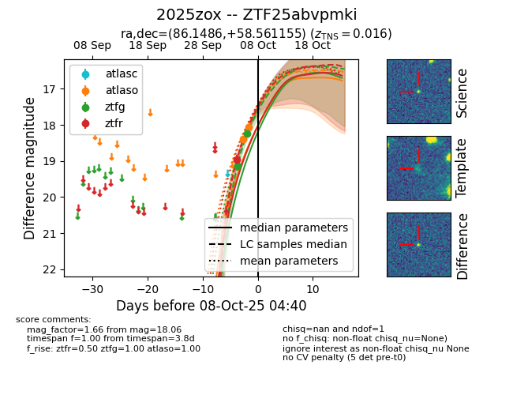
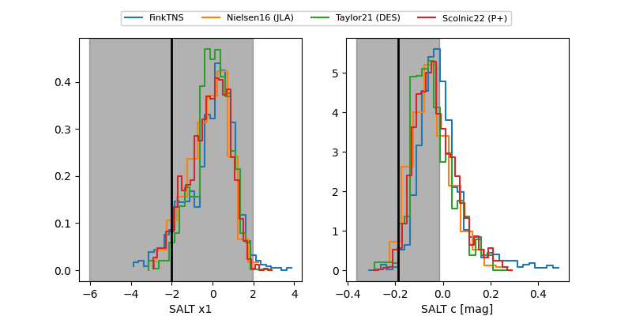

FINK: ZTF25abvpmki
Lasair: ZTF25abvpmki
ALeRCE: ZTF25abvpmki
TNS: 2025zox
YSE: 2025zox
ZTF25abvpmki (ztf,fink)
2025zox (tns,yse)
equatorial (ra, dec) = (86.1486,+58.56115)
galactic (l, b) = (154.0444,+14.80707)


last atlaso=18.06, ztfg=18.24, ztfr=18.96
2 atlaso, 2 ztfg, 1 ztfr detections